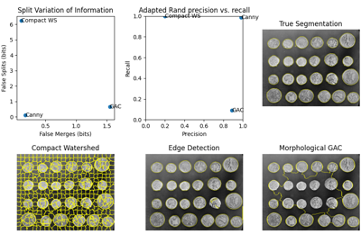
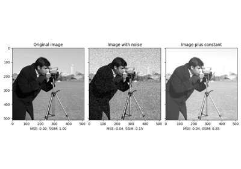
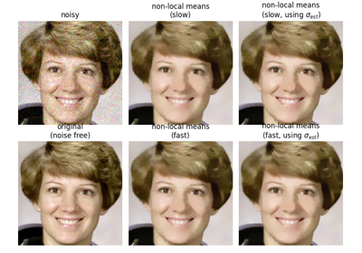

skimage.metrics#
Compute Adapted Rand error as defined by the SNEMI3D contest. |
|
Return the contingency table for all regions in matched segmentations. |
|
Calculate the Hausdorff distance between nonzero elements of given images. |
|
Returns pair of points that are Hausdorff distance apart between nonzero elements of given images. |
|
Compute the mean-squared error between two images. |
|
Compute the normalized mutual information (NMI). |
|
Compute the normalized root mean-squared error (NRMSE) between two images. |
|
Compute the peak signal to noise ratio (PSNR) for an image. |
|
Compute the mean structural similarity index between two images. |
|
Return symmetric conditional entropies associated with the VI. |
- skimage.metrics.adapted_rand_error(image_true=None, image_test=None, *, table=None, ignore_labels=(0,), alpha=0.5)[source]#
Compute Adapted Rand error as defined by the SNEMI3D contest. [1]
- Parameters:
- image_truendarray of int
Ground-truth label image, same shape as im_test.
- image_testndarray of int
Test image.
- tablescipy.sparse array in crs format, optional
A contingency table built with skimage.evaluate.contingency_table. If None, it will be computed on the fly.
- ignore_labelssequence of int, optional
Labels to ignore. Any part of the true image labeled with any of these values will not be counted in the score.
- alphafloat, optional
Relative weight given to precision and recall in the adapted Rand error calculation.
- Returns:
- arefloat
The adapted Rand error.
- precfloat
The adapted Rand precision: this is the number of pairs of pixels that have the same label in the test label image and in the true image, divided by the number in the test image.
- recfloat
The adapted Rand recall: this is the number of pairs of pixels that have the same label in the test label image and in the true image, divided by the number in the true image.
Notes
Pixels with label 0 in the true segmentation are ignored in the score.
The adapted Rand error is calculated as follows:
\(1 - \frac{\sum_{ij} p_{ij}^{2}}{\alpha \sum_{k} s_{k}^{2} + (1-\alpha)\sum_{k} t_{k}^{2}}\), where \(p_{ij}\) is the probability that a pixel has the same label in the test image and in the true image, \(t_{k}\) is the probability that a pixel has label \(k\) in the true image, and \(s_{k}\) is the probability that a pixel has label \(k\) in the test image.
Default behavior is to weight precision and recall equally in the adapted Rand error calculation. When alpha = 0, adapted Rand error = recall. When alpha = 1, adapted Rand error = precision.
References
[1]Arganda-Carreras I, Turaga SC, Berger DR, et al. (2015) Crowdsourcing the creation of image segmentation algorithms for connectomics. Front. Neuroanat. 9:142. DOI:10.3389/fnana.2015.00142
Evaluating segmentation metrics
Evaluating segmentation metrics
- skimage.metrics.contingency_table(im_true, im_test, *, ignore_labels=None, normalize=False)[source]#
Return the contingency table for all regions in matched segmentations.
- Parameters:
- im_truendarray of int
Ground-truth label image, same shape as im_test.
- im_testndarray of int
Test image.
- ignore_labelssequence of int, optional
Labels to ignore. Any part of the true image labeled with any of these values will not be counted in the score.
- normalizebool
Determines if the contingency table is normalized by pixel count.
- Returns:
- contscipy.sparse.csr_matrix
A contingency table. cont[i, j] will equal the number of voxels labeled i in im_true and j in im_test.
- skimage.metrics.hausdorff_distance(image0, image1, method='standard')[source]#
Calculate the Hausdorff distance between nonzero elements of given images.
- Parameters:
- image0, image1ndarray
Arrays where
Truerepresents a point that is included in a set of points. Both arrays must have the same shape.- method{‘standard’, ‘modified’}, optional, default = ‘standard’
The method to use for calculating the Hausdorff distance.
standardis the standard Hausdorff distance, whilemodifiedis the modified Hausdorff distance.
- Returns:
- distancefloat
The Hausdorff distance between coordinates of nonzero pixels in
image0andimage1, using the Euclidean distance.
Notes
The Hausdorff distance [1] is the maximum distance between any point on
image0and its nearest point onimage1, and vice-versa. The Modified Hausdorff Distance (MHD) has been shown to perform better than the directed Hausdorff Distance (HD) in the following work by Dubuisson et al. [2]. The function calculates forward and backward mean distances and returns the largest of the two.References
[2]M. P. Dubuisson and A. K. Jain. A Modified Hausdorff distance for object matching. In ICPR94, pages A:566-568, Jerusalem, Israel, 1994. DOI:10.1109/ICPR.1994.576361 http://citeseerx.ist.psu.edu/viewdoc/summary?doi=10.1.1.1.8155
Examples
>>> points_a = (3, 0) >>> points_b = (6, 0) >>> shape = (7, 1) >>> image_a = np.zeros(shape, dtype=bool) >>> image_b = np.zeros(shape, dtype=bool) >>> image_a[points_a] = True >>> image_b[points_b] = True >>> hausdorff_distance(image_a, image_b) 3.0

- skimage.metrics.hausdorff_pair(image0, image1)[source]#
Returns pair of points that are Hausdorff distance apart between nonzero elements of given images.
The Hausdorff distance [1] is the maximum distance between any point on
image0and its nearest point onimage1, and vice-versa.- Parameters:
- image0, image1ndarray
Arrays where
Truerepresents a point that is included in a set of points. Both arrays must have the same shape.
- Returns:
- point_a, point_barray
A pair of points that have Hausdorff distance between them.
References
Examples
>>> points_a = (3, 0) >>> points_b = (6, 0) >>> shape = (7, 1) >>> image_a = np.zeros(shape, dtype=bool) >>> image_b = np.zeros(shape, dtype=bool) >>> image_a[points_a] = True >>> image_b[points_b] = True >>> hausdorff_pair(image_a, image_b) (array([3, 0]), array([6, 0]))
- skimage.metrics.mean_squared_error(image0, image1)[source]#
Compute the mean-squared error between two images.
- Parameters:
- image0, image1ndarray
Images. Any dimensionality, must have same shape.
- Returns:
- msefloat
The mean-squared error (MSE) metric.
Notes
Changed in version 0.16: This function was renamed from
skimage.measure.compare_msetoskimage.metrics.mean_squared_error.Structural similarity index
Full tutorial on calibrating Denoisers Using J-Invariance
Full tutorial on calibrating Denoisers Using J-Invariance
- skimage.metrics.normalized_mutual_information(image0, image1, *, bins=100)[source]#
Compute the normalized mutual information (NMI).
The normalized mutual information of \(A\) and \(B\) is given by:
.. math::
Y(A, B) = frac{H(A) + H(B)}{H(A, B)}
where \(H(X) := - \sum_{x \in X}{x \log x}\) is the entropy.
It was proposed to be useful in registering images by Colin Studholme and colleagues [1]. It ranges from 1 (perfectly uncorrelated image values) to 2 (perfectly correlated image values, whether positively or negatively).
- Parameters:
- image0, image1ndarray
Images to be compared. The two input images must have the same number of dimensions.
- binsint or sequence of int, optional
The number of bins along each axis of the joint histogram.
- Returns:
- nmifloat
The normalized mutual information between the two arrays, computed at the granularity given by
bins. Higher NMI implies more similar input images.
- Raises:
- ValueError
If the images don’t have the same number of dimensions.
Notes
If the two input images are not the same shape, the smaller image is padded with zeros.
References
[1]C. Studholme, D.L.G. Hill, & D.J. Hawkes (1999). An overlap invariant entropy measure of 3D medical image alignment. Pattern Recognition 32(1):71-86 DOI:10.1016/S0031-3203(98)00091-0
- skimage.metrics.normalized_root_mse(image_true, image_test, *, normalization='euclidean')[source]#
Compute the normalized root mean-squared error (NRMSE) between two images.
- Parameters:
- image_truendarray
Ground-truth image, same shape as im_test.
- image_testndarray
Test image.
- normalization{‘euclidean’, ‘min-max’, ‘mean’}, optional
Controls the normalization method to use in the denominator of the NRMSE. There is no standard method of normalization across the literature [1]. The methods available here are as follows:
‘euclidean’ : normalize by the averaged Euclidean norm of
im_true:NRMSE = RMSE * sqrt(N) / || im_true ||
where || . || denotes the Frobenius norm and
N = im_true.size. This result is equivalent to:NRMSE = || im_true - im_test || / || im_true ||.
‘min-max’ : normalize by the intensity range of
im_true.‘mean’ : normalize by the mean of
im_true
- Returns:
- nrmsefloat
The NRMSE metric.
Notes
Changed in version 0.16: This function was renamed from
skimage.measure.compare_nrmsetoskimage.metrics.normalized_root_mse.References
- skimage.metrics.peak_signal_noise_ratio(image_true, image_test, *, data_range=None)[source]#
Compute the peak signal to noise ratio (PSNR) for an image.
- Parameters:
- image_truendarray
Ground-truth image, same shape as im_test.
- image_testndarray
Test image.
- data_rangeint, optional
The data range of the input image (distance between minimum and maximum possible values). By default, this is estimated from the image data-type.
- Returns:
- psnrfloat
The PSNR metric.
Notes
Changed in version 0.16: This function was renamed from
skimage.measure.compare_psnrtoskimage.metrics.peak_signal_noise_ratio.References
Non-local means denoising for preserving textures
Non-local means denoising for preserving textures
Full tutorial on calibrating Denoisers Using J-Invariance
Full tutorial on calibrating Denoisers Using J-Invariance


- skimage.metrics.structural_similarity(im1, im2, *, win_size=None, gradient=False, data_range=None, channel_axis=None, gaussian_weights=False, full=False, **kwargs)[source]#
Compute the mean structural similarity index between two images. Please pay attention to the data_range parameter with floating-point images.
- Parameters:
- im1, im2ndarray
Images. Any dimensionality with same shape.
- win_sizeint or None, optional
The side-length of the sliding window used in comparison. Must be an odd value. If gaussian_weights is True, this is ignored and the window size will depend on sigma.
- gradientbool, optional
If True, also return the gradient with respect to im2.
- data_rangefloat, optional
The data range of the input image (difference between maximum and minimum possible values). By default, this is estimated from the image data type. This estimate may be wrong for floating-point image data. Therefore it is recommended to always pass this scalar value explicitly (see note below).
- channel_axisint or None, optional
If None, the image is assumed to be a grayscale (single channel) image. Otherwise, this parameter indicates which axis of the array corresponds to channels.
Added in version 0.19:
channel_axiswas added in 0.19.- gaussian_weightsbool, optional
If True, each patch has its mean and variance spatially weighted by a normalized Gaussian kernel of width sigma=1.5.
- fullbool, optional
If True, also return the full structural similarity image.
- Returns:
- mssimfloat
The mean structural similarity index over the image.
- gradndarray
The gradient of the structural similarity between im1 and im2 [2]. This is only returned if gradient is set to True.
- Sndarray
The full SSIM image. This is only returned if full is set to True.
- Other Parameters:
- use_sample_covariancebool
If True, normalize covariances by N-1 rather than, N where N is the number of pixels within the sliding window.
- K1float
Algorithm parameter, K1 (small constant, see [1]).
- K2float
Algorithm parameter, K2 (small constant, see [1]).
- sigmafloat
Standard deviation for the Gaussian when gaussian_weights is True.
Notes
If data_range is not specified, the range is automatically guessed based on the image data type. However for floating-point image data, this estimate yields a result double the value of the desired range, as the dtype_range in skimage.util.dtype.py has defined intervals from -1 to +1. This yields an estimate of 2, instead of 1, which is most often required when working with image data (as negative light intensities are nonsensical). In case of working with YCbCr-like color data, note that these ranges are different per channel (Cb and Cr have double the range of Y), so one cannot calculate a channel-averaged SSIM with a single call to this function, as identical ranges are assumed for each channel.
To match the implementation of Wang et al. [1], set gaussian_weights to True, sigma to 1.5, use_sample_covariance to False, and specify the data_range argument.
Changed in version 0.16: This function was renamed from
skimage.measure.compare_ssimtoskimage.metrics.structural_similarity.References
[1] (1,2,3)Wang, Z., Bovik, A. C., Sheikh, H. R., & Simoncelli, E. P. (2004). Image quality assessment: From error visibility to structural similarity. IEEE Transactions on Image Processing, 13, 600-612. https://ece.uwaterloo.ca/~z70wang/publications/ssim.pdf, DOI:10.1109/TIP.2003.819861
[2]Avanaki, A. N. (2009). Exact global histogram specification optimized for structural similarity. Optical Review, 16, 613-621. arXiv:0901.0065 DOI:10.1007/s10043-009-0119-z
Structural similarity index
- skimage.metrics.variation_of_information(image0=None, image1=None, *, table=None, ignore_labels=())[source]#
Return symmetric conditional entropies associated with the VI. [1]
The variation of information is defined as VI(X,Y) = H(X|Y) + H(Y|X). If X is the ground-truth segmentation, then H(X|Y) can be interpreted as the amount of under-segmentation and H(Y|X) as the amount of over-segmentation. In other words, a perfect over-segmentation will have H(X|Y)=0 and a perfect under-segmentation will have H(Y|X)=0.
- Parameters:
- image0, image1ndarray of int
Label images / segmentations, must have same shape.
- tablescipy.sparse array in csr format, optional
A contingency table built with skimage.evaluate.contingency_table. If None, it will be computed with skimage.evaluate.contingency_table. If given, the entropies will be computed from this table and any images will be ignored.
- ignore_labelssequence of int, optional
Labels to ignore. Any part of the true image labeled with any of these values will not be counted in the score.
- Returns:
- vindarray of float, shape (2,)
The conditional entropies of image1|image0 and image0|image1.
References
[1]Marina Meilă (2007), Comparing clusterings—an information based distance, Journal of Multivariate Analysis, Volume 98, Issue 5, Pages 873-895, ISSN 0047-259X, DOI:10.1016/j.jmva.2006.11.013.
Evaluating segmentation metrics
Evaluating segmentation metrics